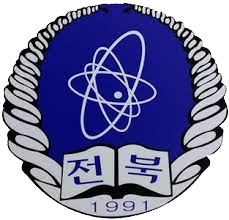

전북과학고 51기 여러분을 기다립니다.
2041년, 전북과학고등학교는 개교 50주년을 맞이합니다.
저희는 앞으로의 50년을 향한 새출발을 함께 할 51기생을 모집합니다.
2041년, 전북과학고등학교는 개교 50주년을 맞이합니다.
저희는 앞으로의 50년을 향한 새출발을 함께 할 51기생을 모집합니다.
과학고등학교는 과학, 수학에 관한 전문 지식을 가르치는 고등학교입니다.
2036년 특수목적고등학교에 대한 대대적인 개편 이후로 현재 과학고는 전국에서 14개가 운영되고 있습니다.
과학고등학교는 수많은 과학·수학 영재를 육성하여 대한민국의 발전에 기여했습니다.
그 중 전북과학고등학교는 전라북도 익산에서 지난 50년 동안 총 2,721명의 학생을 양성하였고
졸업생들 모두 힘든 시대에 대한민국을 환하게 밝힌 촛불이 되었습니다.
| 1990.06.30 | 학교 설립 인가 |
| 1991.03.01 | 초대 최병선 교장 부임 |
| 1991.03.05 | 개교 (제1회 신입생 59명 입학) |
| 1991.12.21 | 본관 신축 이전 |
| 1994.05.24 | 생활관 청운관 신축 입주 |
| 2011.10.11 | 학습동 준공 |
| 2012.12.20 | 학급 증설 인가(9학급) |
| 2017.02.01 | 입지관, 청운관, 역사관 리모델링 |
| 2036.08.12 | 과학고 20교서 14교로 개편, 교표 변경 |
 1991 ~ 2036 2036 ~ | |
| 2039.02.05 | 제46회 졸업식 73명(46기 46명, 47기 27명) |
| 2039.03.01 | 제22대 오윤정 교장 부임 |
| 2039.03.02 | 제49기 70명 입학 |
| 2040.02.21 | 제47회 졸업식 70명 (47기 42명, 48기 28명) |
| 2040.03.02 | 제50기 70명 입학 |
과학고에 입학을 원하는 학생들은, 먼저 이것을 생각해보십시오.
이 학교는 당신에게 맞지 않을 수 있습니다.
이 학교에서 가장 중요한 것은 탐구하는 마음입니다.
스스로에게 물어보십시오. "나는 탐구하는 사람"인가?
저희 학교는 수학 과학을 단순히 좋아하는 것을 넘어서
더 깊이 파고들고 싶어하는 학생을 원합니다.
그런 사람들이 지금껏 세상을 바꿔왔고, 미래를 창조했습니다.
탐구하는 학생이 아니라면 이 학교에서 지내기 힘들지도 모릅니다.
당신이 '탐구하는 학생'이라면, 자격은 그것만으로 충분합니다.
저희 학교는 여러분의 미래를 위한 지원을 아끼지 않을 것입니다.
학교장 동의내신제에 의한 최고의 교사진 확보
심화학습을 통한 고급 지식 함양
책임상담제 운영으로 학생 상담에 적극 지도
영재교육원 운영을 통한 과학영재교육의 선도
탐구력 신장을 위한 3T프로그램 운영
창의력 신장을 위한 Problem-solving 프로그램 운영
첨단 과학실험 기자재 구비
전교생 기숙사 생활로 효율적인 학습관리
아름다운 자연환경과 안정된 면학분위기 조성
자율적이고 창의적인 연구와 실험 활동 가능
사교육이 아닌 자기주도학습에 의한 성취 기회 제공
저렴한 학비와 많은 장학금 혜택(42명 55,917,800원)
활성화된 동아리(학술/스포츠/취미·특성동아리 등 37개)
지속적인 증축으로 탐구적인 학습환경 제공
수학·과학 중심의 심층 토론 수업 실시로 심층 면접 대비
학생 논문, 포트폴리오 등 진학을 위한 지속적인 학습 관리
교과 통합 논술 등 학생의 학습 및 지도에 교사 간 협력 체제 긴밀
조기진급 및 조기졸업을 통해 보다 빠른 학문 연구 가능
수시, 정시 모두에 유리한 교육으로 폭 넓은 대학 진학 기회
| 학교 구분 (해당칸에 ○표) |
특수목적고 | 특성화고 | 자율고 | 일반고 | 설립구분 | 모집구분 | |||||||||
|---|---|---|---|---|---|---|---|---|---|---|---|---|---|---|---|
| 자사고 | 평준화 | 비평준화 | |||||||||||||
| 일반계 | 예체계 | 전문계 | 전문계 | 대안계 | 일반계 | 일반계 | 일반계 | 예체계 | 전문계 | 국립 | 공립 | 사립 | 전기 | 후기 | |
| ○ | ○ | ○ | |||||||||||||
| 모집 구분 | 전형 구분 | 전형 방법 | 모집 인원 | 모집 비율 | 비고 |
|---|---|---|---|---|---|
| 정원 내 | 일반 전형 | 자기주도 학습전형 | 48명 | 80% | 3학급 60명 (주간 남녀 공학) |
| 사회통합 전형 | 12명 | 20% | |||
| 소계 | 60명 | 100% | |||
| 정원 외 | 국가유공자자녀 전형 | 자기주도 학습전형 | 1명 이내 | 모집 정원의 3% 이내 | |
| 고입특례대상자 전형 | 1명 이내 | 모집 정원의 2% 이내 | |||
| 소계 | 2명 이내 | ||||
| 계 | 62명 이내 | ||||
| 단 계 | 일 정 | 세 부 사 항 | 비 고 |
|---|---|---|---|
| 원서 접수 | 09.01.(수) ~ 09.07.(화) | * 입학원서 및 자기소개서: 온라인 접수 * 나머지 서류: 등기우편 또는 방문 접수 - 교과담당교사 추천서, 학교생활기록부(고입용) |
교무업무시스템, 전북고입전형포털시스템, 본교 접수처 |
| [1단계] 서류 평가 (지원자면담) |
09.08.(수) ~ 10.29.(금) | * 서류의 종합적 평가 * 지원자의 제출 서류 진위 여부 확인, 추가 정보 수집 등을 위해 지원자 면담 병행 실시 |
본교 소집(방문) 면담 |
| 면접 대상자 발표 | 11.12.(금) | * 입학전형위원회 면접 대상자 선정 * 면접 대상자 1.5배수 이내 발표 |
본교 홈페이지에서 본인 확인 |
| [2단계] 면접 평가 |
11.19.(금) | * 본교에서 면접 실시 * 인성 및 학업역량 심층 면접 평가 |
본교 소집면접 |
| 합격자 발표 | 12.01.(수) | * 입학전형위원회 합격자 선정 * 최종합격자 발표 |
본교 홈페이지에서 본인 확인 |
| 학교장 추천 원서접수(온라인접수) 09.01(수)~09.07.(화) |
→ | 1단계 서류 평가 (지원자 소집면담 병행) 09.08.(수)~10.29.(금) |
→ | 면접 대상자 발표 11.12.(금) |
| → | 2단계 소집면접 평가 11.19.(금) |
→ | 입학전형위원회 합격자 선정 11.30.(화) |
→ | 최종 합격자 발표 12.01.(수) |

https://namu.wiki/w/%EC%A0%84%EB%B6%81%EA%B3%BC%ED%95%99%EA%B3%A0%EB%93%B1%ED%95%99%EA%B5%90
https://m.blog.naver.com/sannun/221174772847
http://iksan.grandculture.net/iksan/index/GC07501121?category=%EC%9D%B8%EB%AA%85&depth=2&name=%EC%B0%A8&page=3&search=%EC%B5%9C%EB%B3%91%EC%84%A0
더 자세한 내용은 홈페이지에서